``Sampling" is nothing more than recording a live signal into a wavetable, and then later playing it out again. (In commercial samplers the entire wavetable is usually called a ``sample" but to avoid confusion we'll only use the word ``sample" here to mean a single number in an audio signal.)
At its simplest, a sampler is simply a wavetable oscillator, as was shown in Figure 2.3. However, in the earlier discussion we imagined playing the oscillator back at a frequency high enough to be perceived as a pitch, at least 30 Hertz or so. In the case of sampling, the frequency is usually lower than 30 Hertz, and so the period, at least 1/30 second and perhaps much more, is long enough that you can hear the individual cycles as separate events.
Going back to Figure 2.2, suppose that instead of 40 points the
wavetable  is a one-second recording, at an original
sample rate of 44100, so that it has 44100 points; and let
is a one-second recording, at an original
sample rate of 44100, so that it has 44100 points; and let
 in part (b) of the figure have a period of 22050 samples. This
corresponds to a frequency of 2 Hertz. But what we hear is not a pitched sound
at 2 cycles per second (that's too slow to hear as a pitch) but rather, we
hear the original recording
in part (b) of the figure have a period of 22050 samples. This
corresponds to a frequency of 2 Hertz. But what we hear is not a pitched sound
at 2 cycles per second (that's too slow to hear as a pitch) but rather, we
hear the original recording  played back repeatedly at double speed. We've
just reinvented the sampler.
played back repeatedly at double speed. We've
just reinvented the sampler.
In general, if we assume the sample rate  of the recording is the same as
the output sample rate, if the wavetable has
of the recording is the same as
the output sample rate, if the wavetable has  samples, and if we index
it with a sawtooth wave of period
samples, and if we index
it with a sawtooth wave of period  ,
the sample is sped up or slowed down by
a factor of 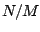, equal to 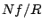 if
,
the sample is sped up or slowed down by
a factor of 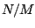, equal to 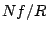 if  is the frequency in Hertz of the
sawtooth. If we denote the transposition factor by
is the frequency in Hertz of the
sawtooth. If we denote the transposition factor by  (so that, for instance,
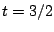 means transposing upward a perfect fifth), and if we denote the
transposition in half-steps by
(so that, for instance,
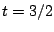 means transposing upward a perfect fifth), and if we denote the
transposition in half-steps by  , then we get the
Transposition Formulas for Looping Wavetables:
, then we get the
Transposition Formulas for Looping Wavetables:
So far we have used a sawtooth as the input wave 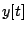, but, as suggested in parts (d) and (e) of Figure 2.2, we could use anything we like as an input signal. In general, the transposition may be time dependent and is controlled by the rate of change of the input signal.
The
transposition multiple  and the transposition in half-steps
and the transposition in half-steps  are then
given by the
Momentary Transposition Formulas for Wavetables:
are then
given by the
Momentary Transposition Formulas for Wavetables:
It's well known that transposing a recording also transposes its timbre--this is the ``chipmunk" effect. Not only are any periodicities (such as might give rise to pitch) transposed, but so are the frequencies of the overtones. Some timbres, notably those of vocal sounds, have characteristic frequency ranges in which overtones are stronger than other nearby ones. Such frequency ranges are also transposed, and this is is heard as a timbre change. In language that will be made more precise in Section 5.1, we say that the spectral envelope is transposed along with the pitch or pitches.
In both this and the preceding section, we have considered playing wavetables periodically. In Section 2.1 the playback repeated quickly enough that the repetition gives rise to a pitch, say between 30 and 4000 times per second, roughly the range of a piano. In the current section we assumed a wavetable one second long, and in this case ``reasonable" transposition factors (less than four octaves up) would give rise to a rate of repetition below 30, usually much lower, and going down as low as we wish.
The number 30 is significant for another reason: it is roughly the maximum number of separate events the ear can discern per second; for instance, 30 vocal phonemes, or melodic notes, or attacks of a snare drum are about the most we can hope to crowd into a second before our ability to distinguish them breaks down.
A continuum exists between samplers and wavetable oscillators, in that the patch of Figure 2.3 can either be regarded as a sampler (if the frequency of repetition is less than about 20 Hertz) or as a wavetable oscillator (if the frequency is greater than about 40 Hertz). It is possible to move continuously between the two regimes. Furthermore, it is not necessary to play an entire wavetable in a loop; with a bit more arithmetic we can choose sub-segments of the wavetable, and these can change in length and location continuously as the wavetable is played.
The practice of playing many small segments of a wavetable in rapid succession is often called granular synthesis. For much more discussion of the possibilities, see [Roa01].
Figure 2.5 shows how to build a very simple looping sampler. In the
figure, if the frequency is  and the segment size in samples is
and the segment size in samples is  ,
the output transposition factor is given by
,
the output transposition factor is given by  , where R is the sample
rate at which the wavetable was recorded (which need not equal the sample rate
the block diagram is working at.) In practice, this equation must usually
be solved for either
, where R is the sample
rate at which the wavetable was recorded (which need not equal the sample rate
the block diagram is working at.) In practice, this equation must usually
be solved for either  or
or  to attain a desired transposition.
to attain a desired transposition.
In the figure, a sawtooth oscillator controls the location of wavetable lookup, but the lower and upper values of the sawtooth aren't statically specified as they were in Figure 2.3; rather, the sawtooth oscillator simply ranges from 0 to 1 in value and the range is adjusted to select a desired segment of samples in the wavetable.
It might be desirable to specify the segment's location  either as its
left-hand edge (its lower bound) or else as the segment's midpoint; in either
case we specify the length
either as its
left-hand edge (its lower bound) or else as the segment's midpoint; in either
case we specify the length  as a separate parameter. In the first
case, we start by
multiplying the sawtooth by
as a separate parameter. In the first
case, we start by
multiplying the sawtooth by  , so that it then ranges from
, so that it then ranges from  to
to  ; then
we add
; then
we add  so that it now ranges from
so that it now ranges from  to 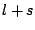. In order to specify the
location as the segment's midpoint, we first subtract
to 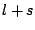. In order to specify the
location as the segment's midpoint, we first subtract  from the sawtooth
(so that it ranges from
from the sawtooth
(so that it ranges from  to
to  ), and then as before multiply by
), and then as before multiply by  (so that it now ranges from 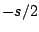 to
(so that it now ranges from 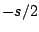 to  ) and add
) and add  to give a range from
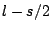 to
to give a range from
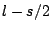 to  .
.
| 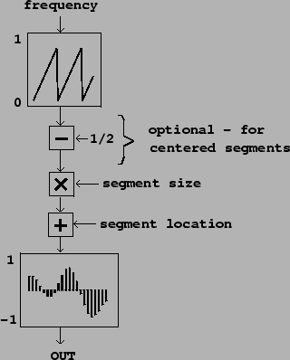 |
In the looping sampler, we will need to worry about maintaining continuity between the beginning and the end of segments of the wavetable; we'll take this up in the next section.
A further detail is that, if the segment size and location are changing
with time (they might be digital audio signals themselves, for instance),
they will affect the transposition factor, and the pitch or timbre of the
output signal might waver up and down as a result. The simplest way to
avoid this problem is to synchronize changes in the values of  and
and  with the regular discontinuities of the sawtooth; since the signal jumps
discontinuously there, the transposition is not really defined there anyway,
and, if you are enveloping to hide the discontinuity, the effects of changes
in
with the regular discontinuities of the sawtooth; since the signal jumps
discontinuously there, the transposition is not really defined there anyway,
and, if you are enveloping to hide the discontinuity, the effects of changes
in  and
and  are hidden as well.
are hidden as well.